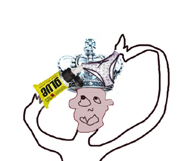

| SHU |
|
SEE HER UNDERWEAR, and protect it by gluing it to your crown. Sssssssssssssssssafety.  |
| まも*る |
protect, take care of
★★★★☆ |
| 保守主義 |
conservative
★★☆☆☆
NEO
politically or morally conservative. |
| 留守 |
be away
★★☆☆☆
FP
to be away from home; to be absent (留守番電話 （るすばんでんわ)＝ leave a message at the tone) |
| 看守 |
prison guard
☆☆☆☆☆
|
|
conserve
保存 保護 する 保守 |
 KANJIDAMAGE
KANJIDAMAGE